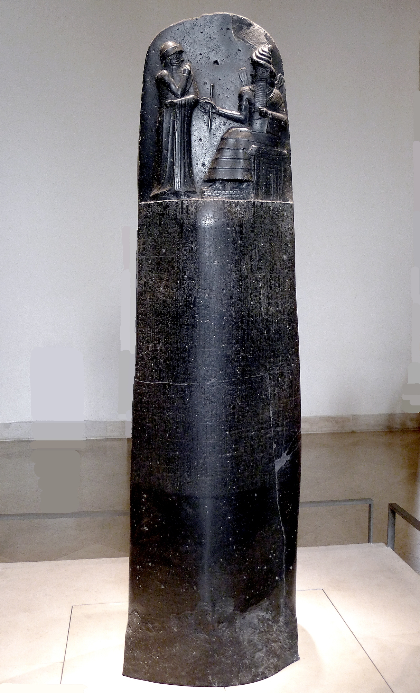
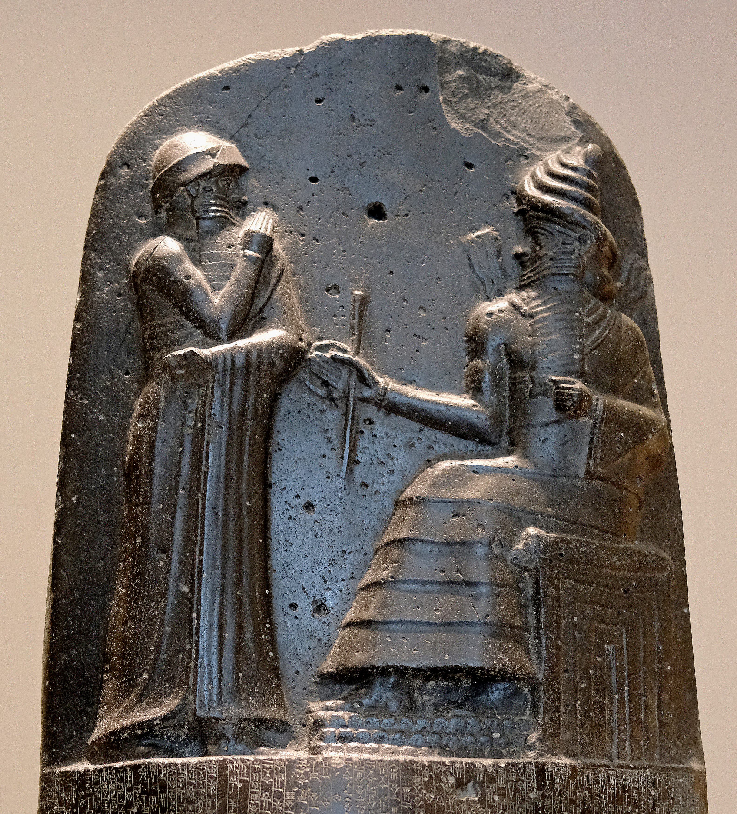
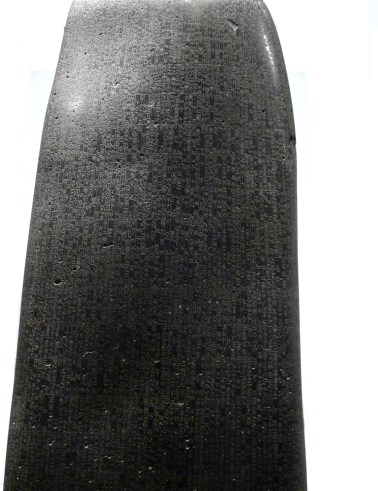

Mesopotâmia
Fontes e imagens
Material de apoio ao professor. A apresentação distingue fotografias de peças reais de cenas ilustrativas geradas por IA. Estas últimas não são prova histórica nem reconstrução arqueológica certificada.
A estela de Hammurabi
Fotografias da peça conservada no Louvre, inventário Sb 8. O catálogo identifica basalto e data a obra no reinado de Hammurabi, no século XVIII a.C. No relevo superior, Hammurabi aparece de pé diante de Shamash sentado. Não se representa a entrega de um livro de leis.
Catálogo científico do Louvre — Sb 8






Arquivos fotográficos preservados; a apresentação aplica enquadramentos, aproximações e transições, sem recompor o objeto nem suas inscrições. Licença CC BY 3.0. Não se atribui um parágrafo específico ao recorte de escrita.
“Código de Hammurabi” é uma denominação tradicional. Não implica equivalência com uma codificação legislativa contemporânea, nem aplicação demonstrada de cada disposição como artigo de um código moderno. Referência interpretativa: Barmash (2020), conforme o texto didático final.
Outros objetos documentais
Contrato de colheita — Sippar
Tabuinha de argila, cerca de 1640 a.C., período paleobabilônico. Metropolitan Museum of Art, 11.217.14. Imagem em domínio público / Open Access. É posterior ao reinado de Hammurabi; não é uma carta de Mari e não documenta uma ordália.
Catálogo do Metropolitan Museum
Pintura da Investidura — Mari
Louvre, AO 19826. O catálogo data a pintura em 2000–1800 a.C., início do II milênio. Não afirmamos a identidade do rei. A fotografia conserva as lacunas da peça; ela ilustra iconografia de legitimação régia, não uma cena de ordália.
Fotografia: Marie-Lan Nguyen / Jastrow, domínio público conforme a página do arquivo. Louvre · Fotografia original · Documentação arqueológica e cautela sobre a identificação.

Cenas ilustrativas e vídeo
O vídeo integral da ordália foi fornecido pelo professor. Sua encenação não estabelece a mecânica exata da prova, discutida na historiografia. Não se presume o resultado do julgamento nem a morte da participante.
As cenas de acompanhamento em Mari, comparação de tabuinhas e audiência régia são reconstruções ilustrativas por IA. A distribuição dos agentes, rostos, roupas específicas e arquitetura não são certificados arqueológicos. A pintura na parede da audiência é um motivo inventado; não é uma restauração da Pintura da Investidura.
Os sinais nas tabuinhas geradas não são transcrições de documentos antigos. A tabuinha documental de Sippar e as inscrições da estela são identificadas separadamente. Não há neste acervo fotografia de uma carta identificada sobre ordália em Mari.
Apoios de contexto: Arquivos de Mari e Estudo dos textos de Mari.
Base acadêmica
Fonte principal: texto final do professor Flávio Marcelo Gomes, Transformações históricas do Direito — Da pluralidade normativa à centralidade do Estado, seção 3. O texto não foi alterado. A cena audiovisual seleciona suas ideias; não substitui o material de estudo.
MASCARO, Alysson Leandro Barbate. Introdução ao estudo do direito. 4. ed. São Paulo: Atlas, 2013. p. 1–2; 165–166.
BARMASH, Pamela. The Laws of Hammurabi: at the confluence of royal and scribal traditions. New York: Oxford University Press, 2020. p. 49–86; 137–218; 231–250. DOI.
REID, J. Nicholas. Judicial process and proof. In: Prisons in Ancient Mesopotamia. Oxford: Oxford University Press, 2022. p. 86–125. DOI.
TÖYRÄÄNVUORI, Joanna. Trial by Water through the Ages. Studia Antiqua et Archaeologica, v. 27, n. 2, p. 301–330, 2021. Para a cena: p. 309–312 e 319. DOI.
As indicações bibliográficas acima seguem as referências do texto didático. Não significam auditoria integral independente de todas as obras neste ciclo de implementação. Catálogos de museus foram consultados para a identificação das peças.